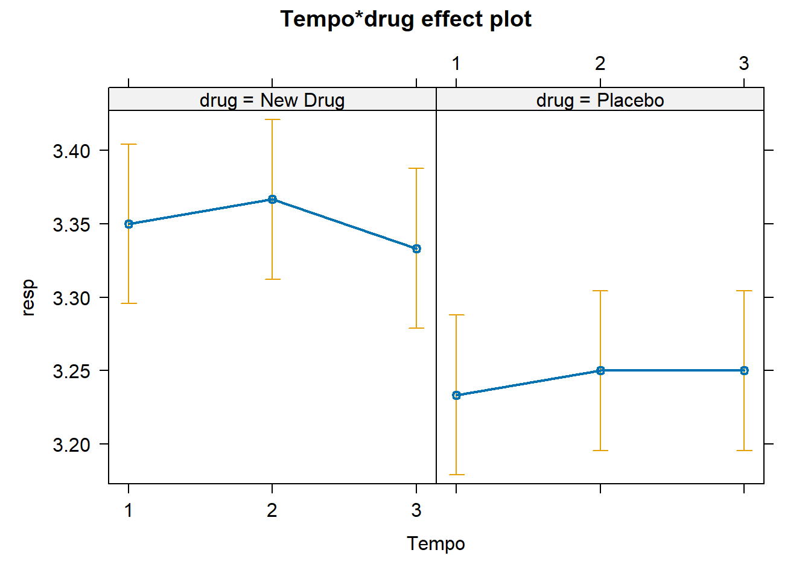

library(emmeans)
library(nlme)
library(flexplot)
library(foreign)
library(dplyr)
library(multcomp)
library(effects)
library(performance)
library(easystats)3 Lista 3 - Matriz de Covariância
3.1 Pacotes que vamos utilizar
3.2 Instruções e carregando o banco de dados
Vamos utilizar um GMM para verificar o efeito de tempo e grupo sobre os resultados de resp (o banco já está no formato correto). Porém, antes disso vamos avaliar qual a melhor matriz de covariância que o modelo deve aplicar aos dados.
dataset = read.spss("bd_New drug_respiratory&pulseRESHAPE.sav", to.data.frame=TRUE)
Muito importante!
SEMPRE verifique o tipo das variáveis no banco de dados. Elas podem ser fatores, números íntegros, números decimais, etc. As análises mudam MUITO dependendo do tipo de variável que utilizamos no modelo de regressão linear!
Para verificar o tipo das variáveis podemos utilizar a função glimpse().
glimpse(dataset)Rows: 36
Columns: 5
$ Sujeito <dbl> 1, 1, 1, 2, 2, 2, 3, 3, 3, 4, 4, 4, 5, 5, 5, 6, 6, 6, 7, 7, 7,…
$ drug <fct> New Drug, New Drug, New Drug, New Drug, New Drug, New Drug, Ne…
$ Tempo <dbl> 1, 2, 3, 1, 2, 3, 1, 2, 3, 1, 2, 3, 1, 2, 3, 1, 2, 3, 1, 2, 3,…
$ resp <dbl> 3.4, 3.3, 3.3, 3.4, 3.4, 3.3, 3.3, 3.4, 3.4, 3.4, 3.4, 3.4, 3.…
$ pulse <dbl> 2.2, 2.1, 2.1, 2.2, 2.1, 2.2, 2.3, 2.4, 2.3, 2.3, 2.4, 2.3, 2.…Notem que a variável Tempo está como <dbl>, indicando que é uma variável contínua. Vejam a aula prática em que o Altay explica que os tempos de coleta na verdade são fatores e não indicam uma ordem ou um contínuo. Seria como dizer que as amostras foram coletadas nos Tempos “X”, “Y” e “Z”.
Para transformar a variável Tempo em um fator podemos utilizar o seguinte código:
dataset$Tempo = as.factor(dataset$Tempo)Rodando novamente a função glimpse() é possível observar que agora sim temos a variável Tempo como <fct>, indicando que ela é do tipo fator .
glimpse(dataset)Rows: 36
Columns: 5
$ Sujeito <dbl> 1, 1, 1, 2, 2, 2, 3, 3, 3, 4, 4, 4, 5, 5, 5, 6, 6, 6, 7, 7, 7,…
$ drug <fct> New Drug, New Drug, New Drug, New Drug, New Drug, New Drug, Ne…
$ Tempo <fct> 1, 2, 3, 1, 2, 3, 1, 2, 3, 1, 2, 3, 1, 2, 3, 1, 2, 3, 1, 2, 3,…
$ resp <dbl> 3.4, 3.3, 3.3, 3.4, 3.4, 3.3, 3.3, 3.4, 3.4, 3.4, 3.4, 3.4, 3.…
$ pulse <dbl> 2.2, 2.1, 2.1, 2.2, 2.1, 2.2, 2.3, 2.4, 2.3, 2.3, 2.4, 2.3, 2.…
Dica
Faça os modelos antes e depois de transformar a variável Tempo em um fator e compare os resultados.
Agora sim podemos realizar nossas análises e comparar com os resultados do SPSS.
3.3 a) Criando os modelos para a variável Resp
Há diversos pacotes no R que podemos alterar a matriz de covariância do modelo. Optamos por escolher a função lme() do pacote nlme por ela ter de forma bem direta todas as matrizes escolhidas na aula prática utilizando o SPSS. Recomendamos também o pacote geepackpara outras matrizes.
Matriz simétrica
model_resp_sim = lme(
fixed = resp ~ 1 + drug + Tempo + drug * Tempo,
random =~ 1|Sujeito,
correlation = corCompSymm(form = ~1|Sujeito), # Aqui definimos a matriz
data = dataset)Matriz Ar(1)
model_resp_AR1 = lme(
fixed = resp ~ Tempo + drug + Tempo * drug,
random = ~1|Sujeito,
correlation = corAR1(form = ~ 1|Sujeito), # Aqui definimos a matriz
data = dataset)Matriz Diagonal (identidade)
model_resp_Iden = lme(
fixed = resp ~ drug + Tempo + drug * Tempo,
random = ~1|Sujeito,
correlation = corIdent(form = ~ 1|Sujeito), # Aqui definimos a matriz
data = dataset)Matriz Não estruturada (Unstructured)
model_resp_Uns = lme(
fixed = resp ~ drug + Tempo + drug * Tempo,
random = ~1|Sujeito,
correlation = corSymm(form = ~ 1|Sujeito), # Aqui definimos a matriz
data = dataset)3.4 b) Comparando os valores de AIC e BIC
Podemos colocar os resultados dos valores de AIC e BIC dos modelos em um dataframe para poder compará-los.
# Crie um dataframe
df_aderencia <- data.frame(
Modelo = c("model_resp_sim", "model_resp_AR1", "model_resp_Iden", "model_resp_Uns"),
AIC = c(AIC(model_resp_sim), AIC(model_resp_AR1), AIC(model_resp_Iden), AIC(model_resp_Uns)),
BIC = c(BIC(model_resp_sim), BIC(model_resp_AR1), BIC(model_resp_Iden), BIC(model_resp_Uns))
)
# Arredonde os valores para 3 casas decimais
df_aderencia$AIC <- round(df_aderencia$AIC, 3)
df_aderencia$BIC <- round(df_aderencia$BIC, 3)
# Adicione um asterisco às células correspondentes aos menores valores de AIC e BIC
df_aderencia$AIC <- ifelse(df_aderencia$AIC == min(df_aderencia$AIC), paste0(df_aderencia$AIC, "*"), df_aderencia$AIC)
df_aderencia$BIC <- ifelse(df_aderencia$BIC == min(df_aderencia$BIC), paste0(df_aderencia$BIC, "*"), df_aderencia$BIC)
# Exiba o dataframe
print(df_aderencia) Modelo AIC BIC
1 model_resp_sim -51.363 -38.752
2 model_resp_AR1 -54.3* -41.69
3 model_resp_Iden -53.363 -42.153*
4 model_resp_Uns -53.455 -38.042
Dica!
Podemos utilizar a função compare_performance para comparar diversos valores de aderência dos modelos!
compare_performance(model_resp_sim,
model_resp_AR1,
model_resp_Iden,
model_resp_Uns,
metrics = c("AIC","BIC"),
rank = TRUE)# Comparison of Model Performance Indices
Name | Model | AIC weights | BIC weights | Performance-Score
-----------------------------------------------------------------------
model_resp_AR1 | lme | 0.394 | 0.419 | 98.26%
model_resp_Iden | lme | 0.184 | 0.432 | 67.80%
model_resp_Uns | lme | 0.354 | 0.077 | 44.62%
model_resp_sim | lme | 0.068 | 0.072 | 0.00%Das duas formas constatamos que o modelo com a matriz de covariância AR1 apresentou os melhores índices de aderência. Note que os valores de AIC e BIC apresentados na saída da função compare_factors aparecem ponderados. Os valores são calculados dividindo o peso AIC/BIC de um modelo pelo peso AIC/BIC dos outros modelos ajustados.
3.5 c) Resultado do modelo escolhido - AR1
A matriz de covariância AR(1) é uma escolha adequada para o exemplo da droga e do placebo devido à sua capacidade de capturar a dependência temporal nas respostas dos pacientes em estudos longitudinais. Essa matriz reflete a ideia de que as observações próximas no tempo têm uma correlação mais forte, enquanto as observações mais distantes têm uma correlação mais fraca. Isso é consistente com a possibilidade de que os efeitos da droga persistam ao longo do tempo, mas diminuam com o passar dos dias após a administração.
report(model_resp_AR1)We fitted a linear mixed model (estimated using REML and nlminb optimizer) to
predict resp with Tempo, drug and Sujeito (formula: resp ~ Tempo + drug + Tempo
* drug). The model included Sujeito as random effect (formula: ~1 | Sujeito).
The model's total explanatory power is substantial (conditional R2 = 0.41) and
the part related to the fixed effects alone (marginal R2) is of 0.41. The
model's intercept, corresponding to Tempo = 1 and drug = New Drug, is at 3.35
(95% CI [3.29, 3.41], t(20) = 125.70, p < .001). Within this model:
- The effect of Tempo [2] is statistically non-significant and positive (beta =
0.02, 95% CI [-0.04, 0.08], t(20) = 0.59, p = 0.559; Std. beta = 0.21, 95% CI
[-0.52, 0.93])
- The effect of Tempo [3] is statistically non-significant and negative (beta =
-0.02, 95% CI [-0.09, 0.05], t(20) = -0.49, p = 0.627; Std. beta = -0.21, 95%
CI [-1.07, 0.66])
- The effect of drug [Placebo] is statistically significant and negative (beta
= -0.12, 95% CI [-0.20, -0.03], t(10) = -3.10, p = 0.011; Std. beta = -1.44,
95% CI [-2.48, -0.40])
- The effect of Tempo [2] × drug [Placebo] is statistically non-significant and
positive (beta = 8.08e-17, 95% CI [-0.08, 0.08], t(20) = 2.04e-15, p > .999;
Std. beta = -1.43e-15, 95% CI [-1.02, 1.02])
- The effect of Tempo [3] × drug [Placebo] is statistically non-significant and
positive (beta = 0.03, 95% CI [-0.07, 0.13], t(20) = 0.70, p = 0.493; Std. beta
= 0.41, 95% CI [-0.82, 1.64])
Standardized parameters were obtained by fitting the model on a standardized
version of the dataset. 95% Confidence Intervals (CIs) and p-values were
computed using a Wald t-distribution approximation.Faça as análises para a variável Pulse! Lembre-se de não ficar apenas copiando e colando os scripts e mude os nomes das variáveis!
3.6 Extras!
Gráfico do modelo em uma linha
Já vimos algumas formas de apresentar os gráficos dos modelos. A ideia ao longo destes tutoriais é oferecer várias ferramentas para você poder escolher a mais adequada para seus objetivos. Vamos ver uma forma bem prática de criar um gráfico do nosso modelo escolhido com a função plot() em conjunto com a função allEffects()!
plot(allEffects(model_resp_AR1))
Mudando a referência de um fator
Na análise dos modelos observamos que o grupo “New Drug” foi escolhido como referência. Isso é evidenciado pelo fato de que apenas os valores dos estimadores para o grupo “Placebo” são apresentados nos resultados. O R escolhe, por padrão, o valor de referência inicial com base na ordem alfabética dos níveis da variável categórica. Nesse caso, “New Drug” é escolhido como referência por ser o primeiro nível alfabeticamente.
Caso queira confirmar qual é o valor de referência de uma variável, basta utiliza a função levels(), que já vem instalada com o R.
levels(dataset$drug)[1] "New Drug" "Placebo" Podemos alterar facilmente qual será o grupo de referência de nossas análises utilizando a função relevel(), que também já vem instalada no pacote base do R.
dataset$drug <- relevel(dataset$drug, ref = "Placebo")
levels(dataset$drug)[1] "Placebo" "New Drug"Note agora que “Placebo” aparece em primeiro lugar, indicando o novo valor de referência. Escreva um novo modelo e compare os resultados com os anteriores.
3.7 Lista 2 resolvida no SPSS
3.8 Referências
https://bcheggeseth.github.io/CorrelatedData/marginal-models.html
3.9 Versões dos pacotes
report(sessionInfo())Analyses were conducted using the R Statistical language (version 4.3.1; R Core
Team, 2023) on Windows 11 x64 (build 22621), using the packages effectsize
(version 0.8.6; Ben-Shachar MS et al., 2020), flexplot (version 0.20.5; Fife D,
2024), effects (version 4.2.2; Fox J, Weisberg S, 2019), carData (version
3.0.5; Fox J et al., 2022), mvtnorm (version 1.2.3; Genz A, Bretz F, 2009),
TH.data (version 1.1.2; Hothorn T, 2023), multcomp (version 1.4.25; Hothorn T
et al., 2008), emmeans (version 1.8.8; Lenth R, 2023), parameters (version
0.21.3; Lüdecke D et al., 2020), performance (version 0.10.8; Lüdecke D et al.,
2021), easystats (version 0.6.0; Lüdecke D et al., 2022), see (version 0.8.1;
Lüdecke D et al., 2021), insight (version 0.19.6; Lüdecke D et al., 2019),
bayestestR (version 0.13.1; Makowski D et al., 2019), modelbased (version
0.8.6; Makowski D et al., 2020), report (version 0.5.7; Makowski D et al.,
2023), correlation (version 0.8.4; Makowski D et al., 2022), datawizard
(version 0.9.0; Patil I et al., 2022), nlme (version 3.1.163; Pinheiro J et
al., 2023), foreign (version 0.8.85; R Core Team, 2023), survival (version
3.5.7; Therneau T, 2023), MASS (version 7.3.60; Venables WN, Ripley BD, 2002)
and dplyr (version 1.1.3; Wickham H et al., 2023).
References
----------
- Ben-Shachar MS, Lüdecke D, Makowski D (2020). "effectsize: Estimation of
Effect Size Indices and Standardized Parameters." _Journal of Open Source
Software_, *5*(56), 2815. doi:10.21105/joss.02815
<https://doi.org/10.21105/joss.02815>, <https://doi.org/10.21105/joss.02815>.
- Fife D (2024). _flexplot: Graphically Based Data Analysis Using 'flexplot'_.
R package version 0.20.5.
- Fox J, Weisberg S (2019). _An R Companion to Applied Regression_, 3rd
edition. Sage, Thousand Oaks CA.
<https://socialsciences.mcmaster.ca/jfox/Books/Companion/index.html>. Fox J,
Weisberg S (2018). "Visualizing Fit and Lack of Fit in Complex Regression
Models with Predictor Effect Plots and Partial Residuals." _Journal of
Statistical Software_, *87*(9), 1-27. doi:10.18637/jss.v087.i09
<https://doi.org/10.18637/jss.v087.i09>. Fox J (2003). "Effect Displays in R
for Generalised Linear Models." _Journal of Statistical Software_, *8*(15),
1-27. doi:10.18637/jss.v008.i15 <https://doi.org/10.18637/jss.v008.i15>. Fox J,
Hong J (2009). "Effect Displays in R for Multinomial and Proportional-Odds
Logit Models: Extensions to the effects Package." _Journal of Statistical
Software_, *32*(1), 1-24. doi:10.18637/jss.v032.i01
<https://doi.org/10.18637/jss.v032.i01>.
- Fox J, Weisberg S, Price B (2022). _carData: Companion to Applied Regression
Data Sets_. R package version 3.0-5,
<https://CRAN.R-project.org/package=carData>.
- Genz A, Bretz F (2009). _Computation of Multivariate Normal and t
Probabilities_, series Lecture Notes in Statistics. Springer-Verlag,
Heidelberg. ISBN 978-3-642-01688-2.
- Hothorn T (2023). _TH.data: TH's Data Archive_. R package version 1.1-2,
<https://CRAN.R-project.org/package=TH.data>.
- Hothorn T, Bretz F, Westfall P (2008). "Simultaneous Inference in General
Parametric Models." _Biometrical Journal_, *50*(3), 346-363.
- Lenth R (2023). _emmeans: Estimated Marginal Means, aka Least-Squares Means_.
R package version 1.8.8, <https://CRAN.R-project.org/package=emmeans>.
- Lüdecke D, Ben-Shachar M, Patil I, Makowski D (2020). "Extracting, Computing
and Exploring the Parameters of Statistical Models using R." _Journal of Open
Source Software_, *5*(53), 2445. doi:10.21105/joss.02445
<https://doi.org/10.21105/joss.02445>.
- Lüdecke D, Ben-Shachar M, Patil I, Waggoner P, Makowski D (2021).
"performance: An R Package for Assessment, Comparison and Testing of
Statistical Models." _Journal of Open Source Software_, *6*(60), 3139.
doi:10.21105/joss.03139 <https://doi.org/10.21105/joss.03139>.
- Lüdecke D, Ben-Shachar M, Patil I, Wiernik B, Makowski D (2022). "easystats:
Framework for Easy Statistical Modeling, Visualization, and Reporting." _CRAN_.
R package, <https://easystats.github.io/easystats/>.
- Lüdecke D, Patil I, Ben-Shachar M, Wiernik B, Waggoner P, Makowski D (2021).
"see: An R Package for Visualizing Statistical Models." _Journal of Open Source
Software_, *6*(64), 3393. doi:10.21105/joss.03393
<https://doi.org/10.21105/joss.03393>.
- Lüdecke D, Waggoner P, Makowski D (2019). "insight: A Unified Interface to
Access Information from Model Objects in R." _Journal of Open Source Software_,
*4*(38), 1412. doi:10.21105/joss.01412 <https://doi.org/10.21105/joss.01412>.
- Makowski D, Ben-Shachar M, Lüdecke D (2019). "bayestestR: Describing Effects
and their Uncertainty, Existence and Significance within the Bayesian
Framework." _Journal of Open Source Software_, *4*(40), 1541.
doi:10.21105/joss.01541 <https://doi.org/10.21105/joss.01541>,
<https://joss.theoj.org/papers/10.21105/joss.01541>.
- Makowski D, Ben-Shachar M, Patil I, Lüdecke D (2020). "Estimation of
Model-Based Predictions, Contrasts and Means." _CRAN_.
<https://github.com/easystats/modelbased>.
- Makowski D, Lüdecke D, Patil I, Thériault R, Ben-Shachar M, Wiernik B (2023).
"Automated Results Reporting as a Practical Tool to Improve Reproducibility and
Methodological Best Practices Adoption." _CRAN_.
<https://easystats.github.io/report/>.
- Makowski D, Wiernik B, Patil I, Lüdecke D, Ben-Shachar M (2022).
"correlation: Methods for Correlation Analysis." Version 0.8.3,
<https://CRAN.R-project.org/package=correlation>. Makowski D, Ben-Shachar M,
Patil I, Lüdecke D (2020). "Methods and Algorithms for Correlation Analysis in
R." _Journal of Open Source Software_, *5*(51), 2306. doi:10.21105/joss.02306
<https://doi.org/10.21105/joss.02306>,
<https://joss.theoj.org/papers/10.21105/joss.02306>.
- Patil I, Makowski D, Ben-Shachar M, Wiernik B, Bacher E, Lüdecke D (2022).
"datawizard: An R Package for Easy Data Preparation and Statistical
Transformations." _Journal of Open Source Software_, *7*(78), 4684.
doi:10.21105/joss.04684 <https://doi.org/10.21105/joss.04684>.
- Pinheiro J, Bates D, R Core Team (2023). _nlme: Linear and Nonlinear Mixed
Effects Models_. R package version 3.1-163,
<https://CRAN.R-project.org/package=nlme>. Pinheiro JC, Bates DM (2000).
_Mixed-Effects Models in S and S-PLUS_. Springer, New York. doi:10.1007/b98882
<https://doi.org/10.1007/b98882>.
- R Core Team (2023). _foreign: Read Data Stored by 'Minitab', 'S', 'SAS',
'SPSS', 'Stata', 'Systat', 'Weka', 'dBase', ..._. R package version 0.8-85,
<https://CRAN.R-project.org/package=foreign>.
- R Core Team (2023). _R: A Language and Environment for Statistical
Computing_. R Foundation for Statistical Computing, Vienna, Austria.
<https://www.R-project.org/>.
- Therneau T (2023). _A Package for Survival Analysis in R_. R package version
3.5-7, <https://CRAN.R-project.org/package=survival>. Terry M. Therneau,
Patricia M. Grambsch (2000). _Modeling Survival Data: Extending the Cox Model_.
Springer, New York. ISBN 0-387-98784-3.
- Venables WN, Ripley BD (2002). _Modern Applied Statistics with S_, Fourth
edition. Springer, New York. ISBN 0-387-95457-0,
<https://www.stats.ox.ac.uk/pub/MASS4/>.
- Wickham H, François R, Henry L, Müller K, Vaughan D (2023). _dplyr: A Grammar
of Data Manipulation_. R package version 1.1.3,
<https://CRAN.R-project.org/package=dplyr>.